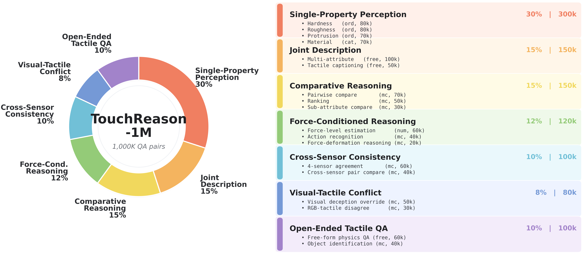
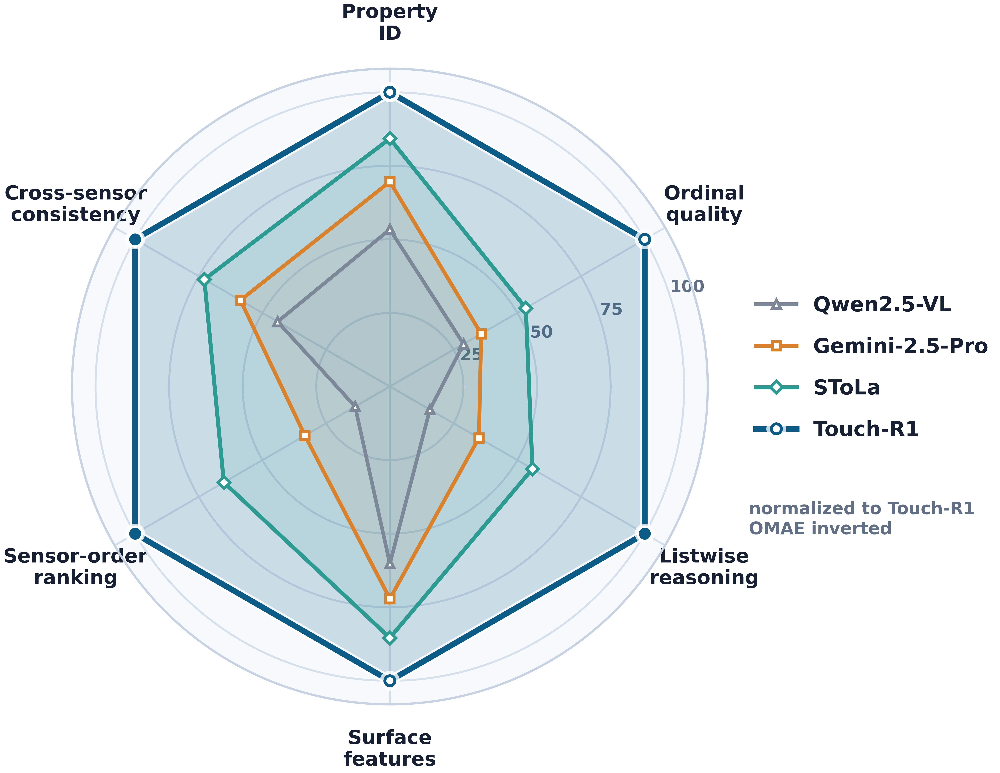
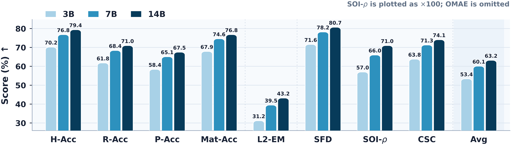
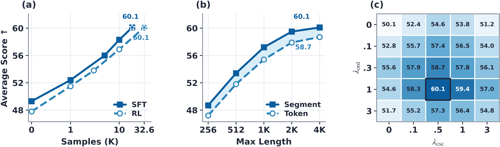

Normal Press
Continuous contact from non-contact toward stronger normal force.
RGB side viewOptical tactile view
Touch-R1 trains multimodal models to reason from physical contact, using tactile-grounded GRPO over optical tactile streams.
Touch-R1 introduces R1-style rule-based reinforcement learning to tactile reasoning. We build TouchReason-1M, a multi-sensor dataset with synchronized tactile-force records and verified reasoning QA, and TouchReason-Bench, a benchmark for tactile perception, ordinal comparison, cross-sensor consistency, and visual-tactile conflict. Touch-R1 combines ordinal-aware accuracy, cross-sensor physical consistency, structured-format control, and input-side tactile grounding, enabling MLLMs to revise visual priors using contact evidence.
Short synchronized clips from TouchReason-style acquisition: a soft plastic cup-lid protrusion under press and shear.
Continuous contact from non-contact toward stronger normal force.
Shear-inducing movement reveals motion-dependent tactile response.
TouchReason-1M couples tactile frames, deformation fields, shear, depth, force, metadata, ordinal labels, and reasoning QA.

Touch-R1 keeps the project-page story simple: learn touch dynamics, align structured QA, then reinforce tactile-grounded reasoning.
Pretrain a touch encoder by predicting future tactile tokens from contact histories.
Align touch, vision, and language to a structured reasoning interface.
Reward answers that are correct, consistent, parsable, and tactile-dependent.
Touch-R1-7B outperforms frontier MLLMs, general VLMs, and tactile-specialist baselines on TouchReason-Bench.

| Model | OMAE ↓ | L2-EM | CSC | Avg |
|---|---|---|---|---|
| Gemini-2.5-Pro | 0.67 | 13.8 | 41.8 | 37.6 |
| SToLa | 0.45 | 22.1 | 51.9 | 47.5 |
| Touch-R1-7B | 0.24 | 39.5 | 71.3 | 60.1 |
The remaining figures are kept visual and lightweight: scale behavior and reward/data ablations.


@article{touchr1,
title = {Touch-R1: Reinforcing Touch Reasoning in MLLMs},
author = {Touch-R1 Authors},
journal = {arXiv preprint},
year = {2026}
}